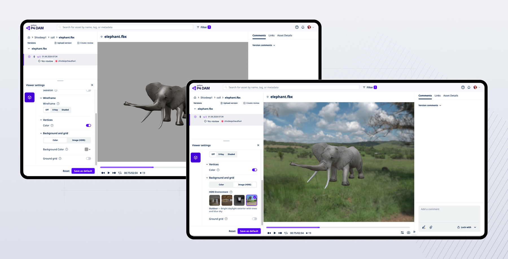
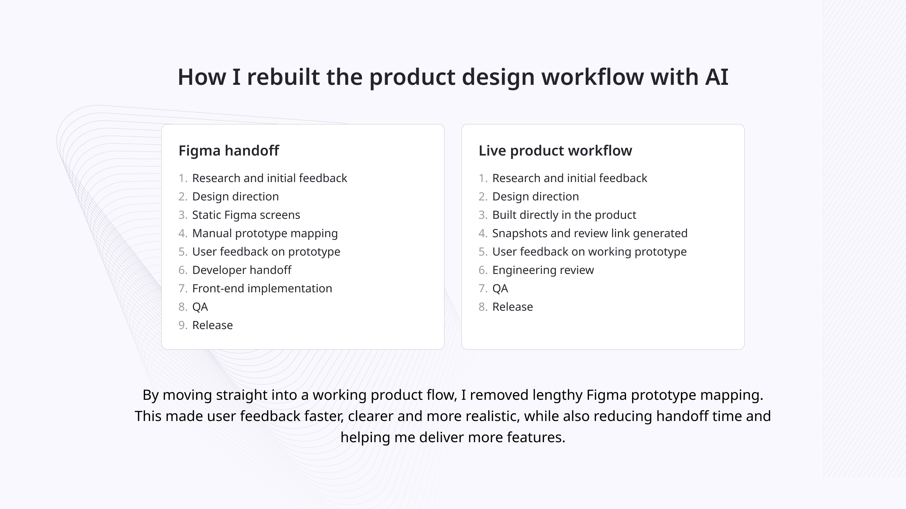
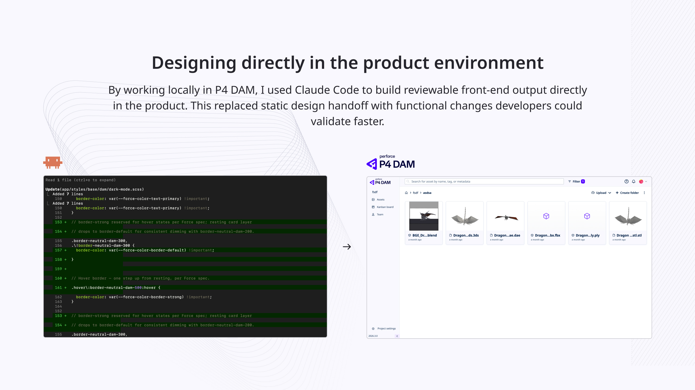

Context
I work for an enterprise software company called Perforce. At Perforce, I am responsible for designing two products within its ecosystem. For this case study, I want to focus specifically on an asset management platform called P4 DAM.
A major challenge emerged when, due to internal redundancies, we went from a team of six front-end developers down to two. Under our traditional workflow, designing static screens in Figma meant impossibly long lead times for implementation. This meant that without changing our method and building with new systems, we would fall behind.
However, I was granted access to Claude Code with a generous token allowance. This is the story of how I transformed that access into a real, functional system. By handing off functional code instead of static designs, developers could quickly review my work and merge it into the quarterly release with a low bounce rate.
The Challenge
Initially, when I was introduced to Claude Code, it felt like a completely new ecosystem, much like the recent wave of AI innovation more broadly. However, I have always been a highly systematic and organised person.
In my personal life, I am usually the one who organises meetups, keeps everything in order, and plans holidays down to the last detail. This natural inclination benefits my career, as peers often refer to me as a “design systems wizard” or a technical designer. People often describe me as organised and responsible.
While many people adopt these new AI tools out of necessity, I genuinely enjoy building systems from the ground up, having previously led and built large-scale design systems for brands such as the GSMA and CityFibre. When I was given access to these tools and a strong budget, I found it extraordinarily interesting to explore and engineer entirely new workflows.

The approach
I was able to install the P4 DAM product locally and start building with it immediately. Other teams in the company struggled with this due to a lack of technical knowledge or other limitations.
Developers still spent time reviewing the work, but the review process became much more focused and efficient. By providing a higher-quality handover through generated spec files, handover documents, and other outputs created by skills and agents I built, I reduced iteration significantly. I would estimate around 50% to 60% fewer clarification questions from developers per feature.
I was able to manage the front end entirely, taking full responsibility for it while developers only needed to review the final output. Because I can iterate much faster, release more features, and require less rework, the current process is far superior to what it was six months ago.


Wider impact
I strongly believe you should not gatekeep these tools or hide any procedural advantage. If something improves quality, speed, or confidence, you have to share it with the team as soon as you can. Things are incredibly competitive in the AI space right now, and to get ahead as a company, we needed everyone on board.
Not everyone moves at the same speed or picks up AI as quickly, so working together is essential. I have already mentored several junior and senior designers on how to improve their workflows and AI systems, presenting multiple times over the last few months in quarterly meetings and more sporadically in smaller sessions. The main goal has been to improve the design organisation’s workflows, raise its collective AI skills, and help more people experience those lightbulb moments when a new tip, workflow, or piece of advice suddenly makes the tool feel more accessible and exciting.
I recently integrated a workflow that allows designers to go directly from transcribing PM notes into a functional system to begin prototyping in Claude. This gives designers a clearer starting point, helps them move from raw product thinking into something structured, and makes AI-assisted prototyping feel more practical and repeatable. This particular system won the Best Designed award during our company-wide internal AI hackathon in 2026.
Result
I transformed access to Claude Code into a real, functional product delivery system. When the team size was reduced, I ensured that output stayed high and went beyond what was previously thought possible, producing more with less without compromise.
My work mentoring other designers and building award-winning systems and workflows caught the attention of company directors, who subsequently appointed me to an exclusive task force. As one of six designers, alongside principals and other senior design managers, I am now responsible for building out the product roadmaps and agentic workflows for Perforce's design organisation.